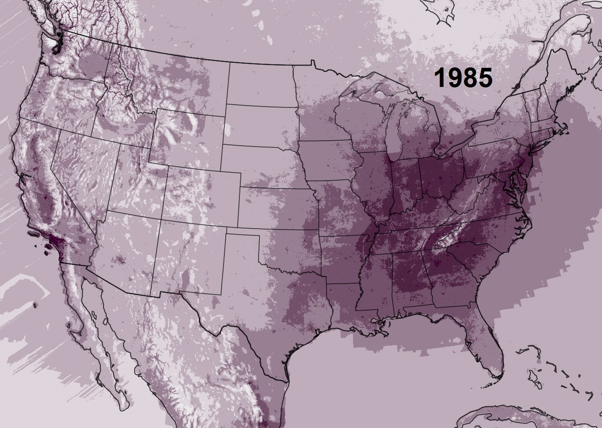

Air pollutants are high concentrations of particles and gases such as soot, smoke, mold, pollen, methane, and carbon dioxide. These particles come from wildfires, warming climate, and the increasing consumption of fossil fuels. These air pollutants are detrimental not only to our health but also to the planet. For this alarming reason many countries want to decrease the concentration of air pollutants in our atmosphere.
In an attempt to decrease the concentration of air pollutants, countries have passed acts, limited industrial work, and have started using more efficient energy sources. For example, in 1955, the United States, who ranked second in the world for air pollutants produced, took their first step in environmental protection. They issued the Air Pollution Control Act, an act that informed the public about air pollution. Then in 1963, they issued the Clean Air Act which allowed the U.S. Environmental Protection Agency (EPA) to regulate the emissions of these harmful air pollutants. The EPA is able to review both stationary(industries) and mobile sources(cars) of air pollutants and set a standard of how much air pollutants can be emitted. This way they can possibly reverse air pollution as more air is purified than emitted.

On the other hand, China, who is ranked first in the world for air pollutants produced, issued the Air Pollution Prevention and Control Action Plan. China's original main energy source was coal, however, they later changed to solar energy, which is a more clean and renewable energy source that doesn't emit air pollutants. The great cost of this change was a $500 million loan, in 2017. Still, China has the world largest Solar PV capacity and a reduction of Carbon Dioxide by over 11,000 tons.
Today, China and American produce less air pollutants compared to the past. In China, the level of PM2.5, one of the most dangerous air pollutants, decreased by over 30% over a period of 5 years. In NorthEast America, the place with the most industries, air pollutants dropped by 30%. However in 2017 things started to change, President Trump announced his decision to abandon the Paris Agreement. The Paris Agreement is an agreement between 200 countries focusing on reducing greenhouse gases emissions. By opting out of this agreement America is reducing their regulation on air pollutants.